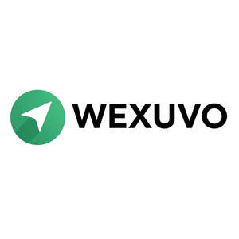

Trade Mark Journal No.2025/024 13 June 2025
UK00004211960 31 May 2025 (9,35,36,42)

- Class 9
- Computer software; Computer software for computer aided software engineering; Computer antivirus software; Computer programming software; Computer graphics software; Computer software programs; Computer gaming software; Software for computers; Computer software for encryption; Computer interface software; Computer software applications; Computer firewall software; Computer operating software; Computer software for the monitoring of computer systems; Computer application software; Computer telephony software; Computer whiteboard software; Computer e-commerce software; Downloadable computer software; Computer game software; Computer games software; Educational computer software; Interactive computer software; Computer software packages; Computer software platforms; Computer software for education; Computer software [programmes]; Computer software for entertainment; Computer software for accessing computer networks; Computer software for advertising; Computer hardware for use in computer-assisted software engineering; Computer software downloadable from global computer networks; Recorded computer software; Computer software, recorded; Software (Computer -), recorded; Computer software for testing vulnerability in computers and computer networks; Downloadable computer security software; Computer software downloaded from the internet; Computer application software for TV; Computer application software for use with wearable computer devices; Software; Computer software downloadable from the internet; Programs (Computer -) [downloadable software]; Computer programs [downloadable software]; Computer software for use in computer access control; Hardware (Computer -); Computer software applications, downloadable; Downloadable computer software applications; Computer hardware; Computers and computer hardware; Downloadable computer utility software; Computer software adapted for use in the operation of computers; Computer software for the creation of firewalls; Computer game software downloadable from a global computer network; Computer operating system software; Software for tablet computers; Computer games programs [software]; Computer software supplied from the Internet; Computer software for database management; Computer software development tools; Controlling software for computer printers; Computer software downloadable from global computer information networks; Computer software for the detection of threats to computer networks; Computer software programs for spreadsheet management; Communications processing computer software; Network management computer software; Computer software for use in programming facsimile machines; Simulation software for use in digital computers; Computer software for accessing databases; Downloadable computer game software; Computer game software, downloadable; Computer software for use in computer network access control; Downloadable computer software for blockchain technology; Computer games programmes [software]; Operating computer software for main frame computers; Software applications for mobile devices; Software applications for use with mobile devices; Software and applications for mobile devices; Downloadable applications for use with mobile devices; Downloadable applications for mobile devices; Downloadable mobile applications; Educational mobile applications; Application software for mobile devices; Application software for mobile phones; Downloadable software applications for mobile phones; Mobile application software; Downloadable mobile applications for use with wearable computer devices; Mobile apps; Computer application software for mobile phones; Downloadable mobile applications for the management of data; Computer application software for mobile telephones; Downloadable mobile applications for the transmission of data; Computer software for mobile applications that enable interaction and interface between vehicles and mobile devices; Downloadable mobile applications for the management of information; Mobile applications for booking taxis; Software for mobile phones; Downloadable mobile applications for booking taxis; Mobile software; Downloadable mobile applications for the transmission of information; Smartphone software applications, downloadable; Downloadable software in the nature of a mobile application; Mobile phones; Mobile computers; Application software for wireless devices; Mobile telecommunications handsets; Devices for hands-free use of mobile phones; Software applications; Downloadable smart phone applications (software); Telemetry devices for engine applications; Batteries for use with mobile telecommunication devices; Educational tablet applications; Application software for smart phones; Computer software for mobile phones; Software for mobile device management; Mobile device management software; Mobile telephones; Electronic game software for mobile phones; Cases for mobile phones; Downloadable applications; Cases adapted for mobile phones; Earphones for use with mobile telecommunication devices; Displays for mobile phones; Mobile radios; Downloadable graphics for mobile phones; Augmented reality software for use in mobile devices; Downloadable application software for smart phones; Electric mobile digital communication devices; Mobile phone cases; Mobile phone connectors for vehicles; Holders adapted for mobile telephones and smartphones; Machine-to-Machine [M2M] applications; Carriers adapted for mobile phones; Holders adapted for mobile phones; Downloadable graphics for mobile telephones; Display modules for mobile phones; Fast chargers for mobile devices; Application software for televisions; Downloadable software applications; Downloadable software in the nature of a mobile application for playing games; Downloadable software in the nature of a mobile application for food delivery and ordering; Braille mobile phones; Mobile telephones for use in vehicles; Computer game software for use on mobile devices; Downloadable ringtones for mobile phones; Downloadable smart phone application software; Computer game software for use on mobile and cellular phones; Keyboards for mobile phones; Computer programs and software for image processing used for mobile phones; Mobile data apparatus; Mobile data receivers; Straps for mobile phones; Web application software; Downloadable emoticons for mobile phones; Mobile telecommunications apparatus; Batteries for mobile phones; Wireless portable printers for use with laptops and mobile devices; Computer software for use on handheld mobile digital electronic devices and other consumer electronics; Workflow applications; Telecommunications apparatus for use with mobile networks; Educational computer applications; Docking stations for mobile phones; Local mobile telephone systems; Application software for cloud computing services; Chargers for mobile phones; Mobile data communications apparatus; Wireless headsets for mobile phones; Stands adapted for mobile phones; Downloadable software in the nature of a mobile application for dark kitchen delivery and ordering; Augmented reality software for use in mobile devices for integrating electronic data with real world environments; Downloadable emoticons for mobile telephones; Mobile telephone cases; Dashboard mounts for mobile phones; Mobile telecommunication apparatus; Mobile phone covers; Application software; Mobile communication terminals; Downloadable software; Downloadable application software; Downloadable game software; Software downloadable from the internet; Downloadable email software; Downloadable video game software; Computer software platforms, recorded or downloadable; Downloadable game related software applications; Downloadable computer software for the management of information; Downloadable computer software for the management of data; Downloadable computer software for use as a digital wallet; Downloadable cloud computing software; Downloadable computer software for the transmission of information; Downloadable instant messaging software; Downloadable electronic game software for wireless devices; Interactive software; Downloadable application software for virtual environments; Downloadable computer software for the transmission of data; Downloadable computer programs; Computer programs, downloadable; Downloadable software, namely virtual bags; Downloadable computer software for use as an electronic wallet; Downloadable electronic game programs; Downloadable software, namely virtual clothing; Software as a medical device [SaMD], downloadable; Downloadable computer graphics; Downloadable software, namely virtual clothing for use in computer games; Downloadable computer game programs; Multimedia software; Downloadable computer software for use as an application programming interface (API); Downloadable video files; Software testing software; Interactive video software; Downloadable computer games; Computer screen saver software, recorded or downloadable; Downloadable computer software for remote monitoring and analysis; Downloadable software, namely virtual currency; Graphics software; Downloadable interactive entertainment software for playing computer games; Downloadable computer software applications for minting non-fungible tokens [NFTs]; Downloadable music files; Interactive database software; Electronic game software; Downloadable computer software for designing and modelling of three dimensional printable products; Downloadable e-books; Collaboration software platforms [software]; Interactive game software; Games software; Downloadable computer utility programs; Pre-recorded software; Downloadable electronic games; Packaged software; Game software; Computer games programs downloaded via the internet [software]; Downloadable video game programs; Downloadable interactive entertainment software for playing video games; Music software; Digital music downloadable provided from a computer database or the internet; Embedded software; Downloadable software applications for use with three dimensional printers; Software reliability software; Video games software; Presentation software; Computer game software for use with on-line interactive games; Educational software; Downloadable software for remotely accessing and controlling a computer; Video game software; Computer games programmes downloaded via the internet [software]; Computer video game software; Software programs for video games; Website development software; Video games programs [computer software]; Downloadable electronic maps; Antispyware software; Simulation software; Antivirus software; Interface software; Downloadable videocasts; Digital music downloadable provided from MP3 internet websites; Integrated software packages; Downloadable digital music; Downloadable videos; Digital music downloadable provided from MP3 internet web sites; Downloadable digital music provided from MP3 Internet web sites; Web development software; Intranet software; Computer application software featuring games and gaming; Plugin software; Software for the analysis of business data; Data management software; Intelligent gateways for real-time data analysis; Data mining software; Data communications software; Data processing software; Big data management software; Platform software; Collaboration management software platforms; Application software for social networking services via internet; Digital telephone platforms and software; Data processing programs; Data processing systems; Data processing equipment; Data processing terminals; Data processing software for word processing; Data processing apparatus; Apparatus for the processing of data; Apparatus for data processing; Readers [data processing equipment]; Electronic data processing equipment; Central processing units for processing information, data, sound or images; Real-time data processing apparatus; Computer programmes for data processing; Scanners [data processing equipment]; Memories for data processing equipment; Data processing programs recorded on machine-readable data carriers; Data processing software for graphic representations; Maintenance software; Computer software used for providing search engine services; Communications software; Enterprise software; Business application software; Business software; Business technology software; Telecommunications software; System software; Communication software; Computer software for wireless content delivery; Network management software; Payment software; Business management software; Communications server software; Computer software programs for database management; Community software; Product engineering software; System support software; Computer software for system cleaning and optimization; Real-Time Collaborative Editing [RTCE] platforms [software]; Computer software platforms for social networking; E-commerce software; Revision control platforms [software]; Digital solutions provider [DSP] software; Cloud server software; Software for online messaging; E-commerce and e-payment software; Cloud network monitoring software; Dashboard software; Enterprise application software [EAS]; CMS software [Content management system]; Digital dashboard software; Extranet software; Cloud computing software; Web application and server software; Interactive business software; Customer relation management [CRM] software; Internet messaging software; Web content management [WCM] software; Enterprise content management [ECM] software; Networking software; Speech analytics software; Product lifecycle management software; Software platforms to allow users to collect money; Interactive casino games provided through a computer or mobile platform; On-premise management software; Social software; Media streaming software; Desktop publishing software; Application server software; Web server software; Media server software; Application software for robot; Electronic Interfaces for Motion Simulator Platforms; Middleware for management of software functions on electronic devices; Software development kit [SDK]; Computer software for use as an application programming interface (API); Computers for use in data management.
- Class 35
- Sales promotions at point of purchase or sale, for others; Business data analysis; Analysis of business data; Business data analysis services; Provision of business data; Compilation of business data; Data processing for the collection of data for business purposes; Preparation of business statistical data; Data processing for businesses; Business information; Information (Business -); Business consultancy services relating to data processing; Business information for enterprises; Dissemination of data relating to business; Analysis of business information; Provision of computerised business information data; Business analysis; Business statistical information services; Business statistics information; Commercial information agencies [provides business information, e.g., marketing or demographic data]; Compilation of statistical data relating to business; Research of business information; Business analysis services; Updating of business information on a computer data base; Business information services; Analysis of business statistics; Business information and research services; Business research and information services; Business analysis and information services, and market research; Information and data compiling and analyzing relating to business management; Collecting information for business; Collecting business information; Business records management; Data management; Business profit analysis; Business and commercial information services; Business information for enterprises (Provision of -); Business management analysis; Collection of statistics for business; Business research; Research (Business -); Business statistical analysis; Data management services; Business information agency services; Collecting business statistics; Business analysis of markets; Business management advice relating to manufacturing business; Outsourcing services in the field of business analytics; Provision of business statistical information; Statistical information (Provision of business -); Business research services; Advisory services relating to business management and business operations; Business surveys; Surveys (Business -); Business file management; Compilation of business statistics and commercial information; Dissemination of business information; Computerised business information processing services; Market research data retrieval services; Provision of computerised data relating to business; Processing of business survey results; Economic information services for business purposes; Compilation of business information; Business information (Compilation of -); Computerised business information services; Market research data collection services; Data processing management; Data processing services; Consultancy regarding business organisation and business economics; Analysis of business trends; Online data processing services; Analysis of business management systems; Data entry and data processing; Business management; Providing business marketing information; Business management consulting services in the field of information technology; Business intelligence services; Business statistical studies; Statistical studies (Business -); Business assistance relating to business image; Business and market research; Business research for new businesses; Business research and survey services; Market research and business analyses; Business planning and business continuity consulting; Provision of business and commercial information; Provision of commercial information [business]; Information in business matters; Provision of business management information; Business information (Provision of -); Provision of business information; Business auditing; Data processing services in the field of payroll; Computerised business information retrieval; Business management services; Preparation of business statistics; Preparation of statistics [business]; Statistics (Preparation of business -); Statistical analysis and reporting services for business purposes; Economic analysis for business purposes; Business management services relating to the acquisition of businesses; Business consulting for enterprises; Business advisory services relating to business liquidations; Business information and inquiries; Business consultancy relating to the administration of information technology; Commercial business management; Computer data entry services; Economic forecasting analysis for business purposes; Business marketing services; Surveys for business purposes; Evaluations relating to business management in commercial enterprises; Data processing; On-line data processing services; Market research services; Market analysis and research services; Market research and analysis services; Market research services for publishers; Computerized market research services; Market study services; Market analysis services; Advisory services relating to market research; Market research; Research (Market -); Market research consultancy; Retail services in relation to mobile phones; Analysis of market research data; Market research data analysis; Analysis of market research data and statistics; Strategic business analysis; Consultancy relating to business analysis; Statistical evaluations of marketing data; Interpretation of market research data; Assessment analysis relating to business management; Analysis of market research statistics; Advisory services relating to business analysis; Marketing analysis; Marketing research and analysis; Marketing research or analysis; Market research and analysis; Market analysis and research; Marketing analysis services; Statistical analysis and reporting; Consultancy relating to data processing; Market analysis reports; Market analysis studies; Analysis of marketing trends; Collection of information relating to market analysis; Business research and surveys; Economic forecasting and analysis; Financial statement preparation and analysis for businesses; Data processing, systematisation and management; Market analysis; Market survey analysis; Preparation and compilation of business and commercial reports and information; Compilation of statistical data relating to medical research; Analysis relating to marketing; Analysis of advertising response and market research; Compilation of statistical data for use in scientific research; Compilation and provision of trade and business price and statistical information; Consultancy relating to the preparation of business statistics; Market research and market analysis; Market assessment services; Marketing research services; Market research for advertising; Market reporting services; Market research and marketing studies; Advertising research services; Market research services relating to broadcast media; Provision of market research information; Market research studies; Market intelligence services; Consumer market information services; Business research and advisory services; Market research services regarding customer loyalty; Providing market research statistics; Market information services relating to market statistics; Conducting of market research; Conducting business and market research surveys; Research services relating to business; Computerised market research; Providing market intelligence services; Market research services regarding Internet usage habits; Interviewing for market research purposes; Collection of market research information; Market analysis services relating to the availability of goods; Market analysis services relating to the availability of antiques; Development of market surveys; Market studies; Market analysis services relating to the sale of goods; Research services relating to advertising; Market study and analysis of market studies; Market analysis services relating to the sale of antiques; Interviewing for qualitative market research; Market information services relating to trade reports; Research services relating to advertising and marketing; Research and analysis in the field of market manipulation; Business intermediary and advisory services in the field of selling products and rendering services; Market assessment consultancy; Business consultancy services relating to product development; Advertising services; Advertising and marketing services; Advertising and advertisement services; Advertising and promotional services; Promotional and advertising services; Promotional advertising services; Services of advertising agencies; Advertising and promotion services; Advertising agency services; Advertising and publicity services; Digital advertising services; Online advertising services; Providing advertising services; Advertising, marketing and promotional services; Advertising, promotional and marketing services; Marketing, advertising, and promotional services; On-line advertising and marketing services; Graphic advertising services; Advertising, marketing and promotion services; Marketing, advertising and promotion services; Political advertising services; Planning services for advertising; Marketing services; Advertising services for the promotion of e-commerce; Advertising services relating to financial services; Classified advertising services; Advertising services for the promotion of beverages; Advertising services for architects; Press advertising services; Consultancy services relating to advertising, publicity and marketing; Advertising and promotion services and related consulting; Advertising services relating to newspapers; Advertising, marketing and promotional consultancy, advisory and assistance services; Advertising services of a radio and television advertising agency; Consultancy relating to advertising and promotion services; Advertising particularly services for the promotion of goods; Advertising, promotional and public relations services; Advertising services relating to cosmetics; Advertising services provided for florists; Advisory services relating to advertising; Advertising services relating to pharmaceuticals; Advertising services for the literary industry; Advertising services relating to pharmaceutical products; Advertising services relating to hotels; Marketing agency services; Advertising services relating to the travel industries; Announcement services for advertising purposes; Advertising services relating to jewelry; Advertising services relating to clothing; Layout services for advertising purposes; Modeling services for advertising or sales promotion; Advertising services relating to the provision of business; Modelling agency services for advertising purposes; Advertising services relating to the transport industries; Provision of space on websites for advertising goods and services; Advertising services provided by a radio and television advertising agency; Promotional services; Advertising services to promote the sale of beverages; Advertising services relating to perfumery; Intermediary services relating to advertising; Provision of computerised advertising services; Advertising and marketing services provided via communications channels; Business advertising services relating to franchising; Modelling agency services relating to advertising; Advertising services provided for others; Advertising services relating to books; Information services relating to advertising; Advertising; Advertising text publication services; Direct mail advertising services; Advertising services relating to the sale of goods; Advertising services relating to public works; Provision of space on web-sites for advertising goods and services; Marketing advisory services; Brand creation services (advertising and promotion); Marketing consultation services; Advertising services provided by television; Publicity services; Advertising and marketing services provided by means of social media; Advertising services provided over the internet; Advertising services relating to financial investment; Advertising services relating to the recruitment of personnel; Customer club services, for commercial, promotional and/or advertising purposes; Customer loyalty services for commercial, promotional and/or advertising purposes; Advertising and marketing services provided by means of blogging; Advertising and marketing consultancy; Direct marketing services; Promotion services; Online advertising network matching services for connecting advertisers to websites; Marketing the goods and services of others; Advertising services relating to the commercialization of new products; Advertising services relating to in vivo imaging products; Advertising and marketing; Business promotion services; Promotional marketing services using audiovisual media; Business marketing consultation services; Business marketing consulting services; Advertising services provided via the internet; Advertising services relating to esports events; Consulting services relating to marketing; Publicity and promotional services; Commercial consultancy services; Publicity agency services; Advertising services relating to data bases; Telemarketing services; Commercial information agency services; Advertising agencies; Advisory services relating to marketing; Advertising services to promote public awareness of the benefits of shopping locally; Consultancy services in the field of affiliate marketing; Provision of marketing advisory services for manufacturers; Consulting services in the field of development of advertising concepts; Consultancy services relating to the procurement of goods and services; Distribution of products for advertising purposes; Promotion, advertising and marketing of on-line websites; Consulting services in the field of Internet marketing; Sales promotion services; Commercial lobbying services; Window dressing services for advertising purposes; Advertising services relating to motor cars; Sponsorship search consultancy services; Trade promotional services; Commercial information services; Advertising services relating to the motor vehicle industry; Corporate communications services; Advertising copywriting; Telephone marketing services [not selling]; Advertising services to promote public awareness of medical conditions; Advertising services for promoting the brokerage of stocks and other securities; Information services relating to businesses; Information services relating to business matters; Computerised information services to business opportunities appraisals; Advisory services and information in business organization and management; Providing business information; Business expertise services; Advisory services (Business -) relating to the management of businesses; Business consulting services; Business networking services; Providing business intelligence services; Business enquiry services; Business consultation services; Provision of commercial and business contact information; Business consultancy services; Business appraisal services; Consultancy services regarding business strategies; Business planning services; Providing online commercial directory information services; Business management services relating to the development of businesses; Business representative services; Business intermediary services; Provision of on-line business and commercial information; Business advisory services; Outsourcing services [business assistance]; Business invoicing services; Providing commercial and business contact information; Business services relating to the establishment of businesses; Business introduction services; Business secretarial services; Advisory services relating to business organization; Business advisory services relating to the use of computers; Consultancy and information services relating to accounting; Business examinations services; Business management and consultation services; Business strategy services; Providing advice and information relating to commercial business management; Online business networking services; Franchising services providing business assistance; Business brokerage services; Business management and consulting services; Business management consulting services; Goods or services price quotations; Administrative services relating to referrals for insurance agents; Automobile registration services; Administrative services relating to dental health insurance; Business consultancy and advisory services; Business advisory and consultancy services; Business consultancy; Business management consultancy and advisory services; Consultancy and advisory services for business management; Business management and consultancy services; Business management consultancy services; Management consultancy services; Business appraisal consultancy; Employment consultancy services; Business consultancy to firms; Employment consultancy; Business management and organisation consultancy services; Assistance and consultancy services in the field of business management of companies in the energy sector; Business management and consultancy; Business management consultancy; Marketing consultancy; Corporate management consultancy services; Consultancy and advisory services in the field of business strategy; Advisory and consultancy services relating to import-export agencies; Consultancy and advisory services relating to business management; Professional business consultancy services; Employment counselling and consultancy services; Business recruitment consultancy; Assistance, advisory services and consultancy with regard to business management; Tax consultancy [accountancy]; Business planning consultancy; Retail services for computer software; Retail services in relation to computer software; Wholesale services in relation to computer software; Business management for freelance service providers; Product launch services; Online community management services; Personal management consultancy services; Personnel management consultancy services; Recruitment consultancy services; Assistance, advisory services and consultancy with regard to business analysis; Consultancy and advisory services relating to personnel management; Consultancy and advisory services relating to personnel placement; Consultancy and advisory services relating to personnel recruitment; Assistance, advisory services and consultancy with regard to business planning; Assistance, advisory services and consultancy with regard to business organization; Advisory and consultancy services relating to the procurement of goods for others; Staff recruitment consultancy services; Business consultancy services relating to manufacturing; Business organisation and management consulting services; Information services relating to data processing; Data retrieval services; Data processing services in the field of transportation; Advisory services relating to data processing; Administrative support and data processing services; Data processing services [office functions]; Data processing services in the field of healthcare; Advisory services relating to electronic data processing; Data inputting services; Administrative data processing; Employment consultancy services relating to data processing personnel; Automated processing of medical data; Data collection services; Electronic data processing; Data processing verification; Automated data processing; Computerised data processing; Computer data processing; Provision of information relating to data processing; Word processing services; Services comprising the transcription of statistical data; Services comprising the recording of statistical data; Bidding quotation; Computer database management services; Provision of computerised business information; Provision of computerised business management information; Computerized accounting services; Provision of computerised information relating to business records; Provision of online financial services comparisons; Computerised database management services; Marketing in the framework of software publishing.
- Class 36
- Insurance services; Provision of insurance services to insurance companies; Insurance consultation services; Insurance underwriting services; Underwriting of insurance (Services for the -); Warranty insurance services; Insurance brokerage services; Guarantee insurance services; Provision of insurance services to reinsurance companies; Insurance agency services; Insurance brokers (Services of -); Personal insurance services; Insurance actuarial services; Insurance arranging services; Vehicle insurance services; Insurance advisory services; Provision of insurance premium quotations; Dental insurance services; Consultancy services relating to insurance; Underwriting of company insurance (Services for the -); Insurance premium financing services; Caravan insurance services; Travel insurance services; Underwriting of business insurance (Services for the -); Underwriting of credit insurance (Services for the -); Medical insurance brokerage services; Endowment insurance services; Accident insurance underwriting services; Insurance and financial information and consultancy services; Consultancy and brokerage services relating to vehicle insurance; Insurance management services; Insurance services relating to credit; Re-insurance services; Medical insurance services provided to companies; Underwriting of health insurance (Services for the -); Underwriting insurance for pre-paid legal services; Consultancy and brokerage services relating to health insurance; Service insurance contracts; Consultancy and brokerage services relating to accident insurance; Underwriting of personal accident insurance (Services for the -); Home insurance services; Consultancy and brokerage services relating to travel insurance; Credit services for the payment of insurance premiums; Credit services for payment of insurance premiums; Personal insurance services relating to the supply of legal services; Providing insurance premium quotations; Telephone banking and insurance services; Consultancy and brokerage services relating to life insurance; Household insurance services; Insurance services for the protection of mortgages; Insurance services relating to the provision of credit; Insurance services relating to vehicles; Consultancy and brokerage services relating to home insurance; Brokerage advisory services relating to insurance; Financial services relating to insurance; Reinsurance services; Advisory services relating to insurance contracts; Insurance services relating to travel; Insurance services relating to property; Insurance claims adjustment services; Insurance services relating to boats; Insurance services relating to credit agreements; Variable insurance investment services; Extended warranty insurance services; Insurance consultancy services relating to explosions; Information services relating to insurance; Insurance services for the construction industry; Insurance information and consultancy; Insurance services for the protection of drivers; Insurance services relating to goods in transit; Stock exchange quotation services; Insurance consultancy; Financial services rendered by insurance companies; Insurance services relating to legal costs; Insurance consultancy services relating to fires; Insurance services for the repayment of medical expense; Advisory services relating to insurance claims; Insurance brokerage consultancy and information; Agency services for arranging travel insurance; Underwriting of annuities (Services for the -); Annuity services; Financial evaluation services relating to insurance; Insurance services relating to life; Advisory services relating to life insurance; Underwriting services; Insurance services for the provision of emergency cash; Provision of information relating to insurance and financial services; Stock price quotation services; Insurance services relating to aviation; Health insurances services relating to coach couriers; Insurance services relating to credit cards; Insurance services relating to holiday accommodation; Insurance underwriting consultancy; Surety services; Provision of insurance information; Insurance services relating to mail order businesses; Insurance services relating to pension funds; Motor vehicle insurance services; Credit services for use in the purchase of services; Computerised information services relating to insurance; Stock exchange quotation and listing services; Insurance; Auto loan brokerage services; Insurance services for thatched properties; Mortgage services; Reinsurance actuarial services; Financial services relating to the insurance of motor vehicles; Insurance services relating to structured settlements rendered to property casualty insurers; Insurance consultation; Personal insurance services relating to the supply of legal advice; Insurance services relating to mechanical breakdown; Insurance claims adjustment and settlement services; Insurance services for mobile telephones; Advisory services relating to loan services; Insurance services relating to sport; Insurance underwriting and appraisals and assessment for insurance purposes; Car broker services; Auto financing services; Insurance services relating to contingency planning; Insurance services relating to motor vehicles; Actuarial services; Health insurances services relating to coach drivers; Insurance underwriting in the field of professional liability insurance; Mortgage broking services; Insurance information; Information (Insurance -); Brokerage services; Valuation services; Insurance services relating to sea cargo; Real estate insurance services; Loan services; Insurance brokerage; Brokerage (Insurance -); Brokerage of insurance; Brokerage of casualty insurance; Insurance agency and brokerage; Brokerage of non-life insurance; Insurance brokerage for property; Motor insurance brokerage; Transit insurance brokerage; Transport insurance brokerage; Life insurance brokerage; Insurance broking; Reinsurance brokerage; Brokerage; Mortgage brokerage; Banking insurance; Insurance underwriting; Underwriting (Insurance -); Mortgage insurance; Insurance brokerage relating to pets; Mortgage brokerage services; Mortgage banking insurance; Property insurance underwriting; Brokerage agency relating to ship insurance; Mortgage banking and brokerage; Insurance brokering; Casualty insurance underwriting; Estate brokerage; Investment brokerage; Securities brokerage; Brokerage of securities; Real-estate brokerage services; Marine insurance underwriting; Transit insurance underwriting; Medical insurance underwriting; Securities brokerage services; Financial brokerage; Brokerage (Financial -); Health insurance underwriting; Business brokerage; Accident insurance underwriting; Non-life insurance underwriting; Mortgage banking and mortgage brokerage; Insurance for offices; Commercial mortgage brokerage; Securities brokerage account services; Life insurance underwriting; Credit brokerage; Insurance subrogation; Insurance for businesses; Fire insurance underwriting; Security brokerage; Financial brokerage services; Brokerage for hire-purchase; Commodities insurance; Financial investment brokerage; Securities brokerage and trading services; Mortgage lending and mortgage brokerage services; Insurance agencies; Automobile accident insurance underwriting; Exchange brokerage; Marine accidents insurance underwriting; Bonds brokerage services; Stock brokerage services; Brokerage services for bonds; Marine fire insurance underwriting; Financial customs brokerage services; Credit insurance; Underwriting insurance for pre-paid health care; Marine insurance; Arranging for financing of insurance premiums; Brokerage house services; Exchange brokerage services; Money brokerage; Aviation insurance; Medical insurance; Bullion brokerage services; Securities and assets brokerage; Brokerage for securities liquidation; Mortgage broking; Brokerage of bonds; Bonds brokerage; Motor insurance; Computerised securities brokerage services; Travel insurance; Automated securities brokerage; Health insurance; Brokerage services in financial markets; Pawn brokerage; Evaluation (Financial -) [insurance, banking, real estate]; Financial evaluation [insurance, banking, real estate]; Financial consultancy services; Financial advice and consultancy services; Financial consultancy and information services; Financial consulting services; Consultancy services relating to financial investment; Financial consultancy services relating to investments; Financial consultancy relating to credit services; Computerised financial data services; Guarantee insurance; Accident insurance; Insurance claims assessment; Consultations [insurance]; Insurance claim assessments; Life insurance; Credit risk insurance; Underwriting relating to marine insurance; Legal expenses insurance; Insurance advice; Insurance for vans; Insurance (Arranging of -); Arranging of insurance; Insurance research; Research (Insurance -); Arranging of credit insurance; Marine transportation insurance underwriting; Claims adjustment for non-life insurance; Claims adjustment (Insurance -); Ship insurance agency; Valuation of cargo for insurance purposes; Insurance loss assessment; Extended warranty insurance; Insurance investigations; Insurance administration; Professional indemnity insurance; Provision of mortgage loan insurance; Appraisals for insurance purposes; Studies (Insurance -); Financial information services; Financial information and advisory services; Financial market information services; Financial information retrieval services; Computerised financial information services; Financial information; Information (Financial -); Financial information, data, advice and consultancy services; Financial services; Financial information services relating to individuals; Financial information management and analysis services; Financial information services relating to currencies; Computerised information services relating to financial business; Information services relating to financial business appraisals; Provision of information relating to financial services; Financial information services relating to financial bond markets; Financial information services relating to financial stock markets; Computer information services relating to financial management; Provision of financial information; Providing financial information; Financial analysis services; Information services relating to banking; Credit information services; Financial research services; Information services relating to finance; Financial services relating to business; Financial management services; Financial consultation services; Financial information processing; Financial exchange services; Financial services relating to investment; Financial credit services; Financial transaction services; Financial information and evaluations; Financial investigation services; Financial payment services; Personal financial planning services; Financial appraisal services; Financial services relating to wealth management; Financial intermediary services; Financial sponsorship services; Financial advisory services; Financial planning services; Financial investment services; Financial services relating to savings; Financial information services relating to lost credit cards; Financial management services relating to medical institutions; Financial services relating to travel; Providing financial information on-line; Personal financial banking services; Financial analysis services relating to investments; Banking and financial services; Financial data base services; Financial services provided to partnerships; Financial database services relating to commodities; Financial guarantee services; Providing investors with financial information; Financial services relating to property; Financial and monetary services; Financial affairs services; Financial information services relating to stolen credit cards; Economic financial research services; Economic research services [financial]; Financial services relating to stocks; Financial valuation services; Financial management services relating to dental institutions; Advisory services relating to financial investments; Financial services relating to securities; Collection of financial information; Information services relating to securities; Brokering of financial services; Personal financial planning advisory services; Actuarial services relating to financial transactions; Financial management services relating to hospitals; Computerised financial services; Financial services relating to pensions; Financial savings services; Financial management services relating to banking institutions; Computerised information services relating to investments; Advisory services relating to financial investment; Financial information services for financial institutions provided via computer networks and satellite transmissions; Financial economic advisory services; Financial pre-payment services; Financial information for investors; Financial lending services for personal purposes; Financial advisory services relating to tax; Provision of computerised financial information; Computerised information services for stocks; Computerised financial advisory services; Computerised information services relating to banking matters; Computerised information services relating to shares; Financial information services provided by access to a computer database; Computerised information services relating to real estate; Computerised banking services; Computerised financial services for retail businesses; Electronic financial trading services; Information services relating to the automated payment of accounts; Computerised financial analysis; Financial database services relating to stocks; Information services relating to the automated transfer of funds; Brokerage services relating to financial instruments; Computerised financial services relating to foreign currency dealings; Financial database services relating to shares; Financial data analysis; Financial analysis and research services; Financial analysis; Analysis (Financial -); Financial analysis and consultancy; Investment analysis; Financial evaluation and analysis; Evaluation of credit bureau data; Financial investment analysis and stock research.
- Class 42
- Software as a service [SaaS]; Software as a service [SAAS] services; Software as a service; Platforms for gaming as software as a service [SaaS]; Consulting services in the field of software as a service [SaaS]; Software as a service [SaaS] featuring software for machine learning; Software as a service [SaaS] featuring software for deep learning; Platforms for graphic design as software as a service [SaaS]; Software as a service [SaaS] featuring software platforms for electronic gaming; Software as a service [SaaS] featuring computer software platforms for artificial intelligence; Platforms for artificial intelligence as software as a service [SaaS]; Software as a service [SaaS] featuring software platforms for graphic design; Hosting services, software as a service, and rental of software; Software as a service [SaaS] featuring software for deep neural networks; Software maintenance services; Software consultancy services; Software consulting services; Computer and software consultancy services; Computer software consultancy services; Application service provider (ASP) services, namely, hosting computer software applications of others; Services for maintenance of computer software; Computer software maintenance services; Software customisation services; Software engineering services; Computer software consulting services; Software development services; Computer software design services; Services for the design of computer software; Application service provider [ASP], namely, hosting computer software applications of others; Computer software advisory services; Software as a service [SaaS] services featuring software for machine learning, deep learning and deep neural networks; Computer software rental services; Services for the leasing of computer software; Support and maintenance services for computer software; Application service provider [ASP] services; Application service provider services; Consultancy services in relation to computer software; Computer software programming services; Installation and maintenance services for software; Services for designing computer software; Services for updating computer software; Development services relating to computer software application solutions; Services for the writing of computer software; Consulting services relating to computer software; Technical services for the downloading of software; Maintenance of software; Software engineering services for data processing; Infrastructure as a Service [IaaS]; Software engineering services for data processing programs; Platform as a Service [PaaS]; Platform as a service [PaaS]; Computer software technical support services; Design services relating to computer software; Consultancy (Computer software -); Application service provider (ASP); Computer software consultancy; Development of computer software application solutions; Advisory services relating to computer software design; Information technology [IT] support services [troubleshooting of software]; Professional advisory services relating to computer software; Advisory services relating to the use of computer software; Advisory services relating to computer software; Consultancy and information services relating to the design, programming and maintenance of computer software; Calibration services relating to computer software; Rental of database management software; Providing user authentication services using biometric hardware and software technology for e-commerce transactions; Development and maintenance of computer database software; User authentication services using single sign-on technology for online software applications; Services for the design of electronic data processing software; Consultancy and information services relating to computer software design; Design and development of operating software for cloud computing networks; Development of software solutions for internet providers and internet users; Computer software maintenance; Computer software (Maintenance of -); Maintenance of computer software; Advisory services relating to computer software used for publishing; Computer software consulting; Maintenance of software for communication systems; Hosting of Access Control as a Service (ACaaS) servers and software; Computer software integration; Rental of application software; Hosting of software for use in library management; Platform as a service [PaaS] featuring software platforms for transmission of images, audio-visual content, video content and messages; Public cloud hosting provider service; Private cloud hosting provider service; Cloud hosting provider services; Blockchain as a Service [BaaS]; IT service management [ITSM]; Cloud computing services; Providing user authentication services using single sign-on technology for online software applications; Hosting of transaction platforms on the internet; Hosting of communication platforms on the internet; Programming of software for e-commerce platforms; Hosting of e-commerce platforms on the Internet; Cloud-based data protection services ; Consulting services in the field of cloud computing; User authentication services using blockchain technology; Programming of software for Internet platforms; Authentication services; User authentication services using technology for e-commerce transactions; Database development services; Cloud storage services for electronic data; Engineering consultancy services; Technical advice and consultancy services in the field of telecommunications; Technical consultancy services relating to structural engineering; Technical consultancy services relating to marine engineering; Technical consultancy services relating to civil engineering; Technical consultancy services relating to electrocardiograms; Technical research services; Architectural consultancy services; Technical consultancy services relating to information technology; Technical advice and consultancy services in the field of information technology; Technical consultancy services relating to computer programming; Environmental consultancy services; Consultancy services relating to product engineering; Technical survey services; Computer engineering consultancy services; Computer consultancy services; Computer consultancy and advisory services; Technical testing services; Consultancy services relating to technological research; Consultancy services relating to design; Architecture consultancy services; Provision of technical consultancy to the shipping industry; Provision of technical consultancy (advice) in the field of telecommunications; Technical inspection services; Provision of technical consultancy to the petrochemical industry; Consultancy services in the field of technological development; Shopfitting design consultancy services; Consultancy services relating to nuclear engineering; Advisory and consultancy services relating to computer hardware; Consultancy and information services relating to software maintenance; Expert consultancy services in connection with computing equipment; Consultancy services relating to geotechnics; Engineering services; Consultancy services relating to computing; Consultancy services relating to geophysics; Consultancy services relating to architecture; Consultancy services relating to software used in the field of e-commerce; Consultancy services for designing information systems; Professional consultancy services relating to computer programming; Advisory and consultancy services relating to the design and development of computer hardware; Consultancy services relating to hydrogeology; Consultancy services relating to information technology; Information technology consulting services; Consultancy services relating to computers; Technological advisory services; Technical consultancy relating to product development; Advisory services relating to design engineering; Consultancy services relating to geographical planning; Computer and information technology consultancy services; Research and consultancy services relating to computer software; IT consultancy, advisory and information services; Ship design consultancy services; Technical advisory services relating to computer programs; Advisory services relating to industrial engineering; Consultancy services relating to geology; Engineering services relating to data processing; Design services for data processing systems; Development services relating to data processing systems; Design services relating to data processing systems; Computer programming services for data processing; Engineering services relating to automatic data processing; Engineering services relating to data processing technology; Design services relating to data processing tools; Data duplication and conversion services, data coding services; Time sharing services for data processing apparatus; Technical advisory services relating to data processing; Computerised data storage services; Rental of data processing programs; Rental services relating to data processing equipment and computers; Leasing of data processing systems; Maintenance of data processing software; Electronic data storage services; Data decryption services; Development of systems for the processing of data; Data recovery services; Design services relating to data processing test tools; Computer services for the analysis of data; Data encryption services; Rental of software for data processing; Programming of data processing equipment; Writing of programs for data processing; Writing of data processing programs; Data migration services; Design services relating to data processors; Electronic data storage and data back-up services; Data security services; Computer programming services for data warehousing; Rental of data processing equipment; Designing of data processing systems; Development of data processing apparatus; Rental of computers for data processing; Preparation of data processing programmes; Programming of data processing programs; Technical data analysis services; Updating of software for data processing; Development of programmes for data processing; Research relating to data processing; Preparation of computer programs for data processing; Data back-up services; Data encryption and decoding services; Rental of data processing apparatus; Testing of electronic data processing systems; Computer services concerning electronic data storage; Design services relating to computerised information processing systems; Design of data processing apparatus; Installation and actualisation of programs for data processing; Creating programmes for data processing; Designing of data processing programmes; Technical services for the downloading of digital data; Advisory services relating to computer software used for printing; Rental and maintenance of computer software; Advisory services relating to the rental of computers or computer software; Computer program maintenance services; Consultation services relating to computer software; Technical support services relating to computer software and applications; Computer system integration services; Development and maintenance of computer software; Computer software installation and maintenance; Installation and maintenance of computer software; Installation of software; Software installation; Computer integration services; Advisory services relating to computer software used for graphics; Provision of on-line support services for computer program users; Advice and development services relating to computer software; Design services for computer hardware; Computer hardware design services; Rental of software; Rental of computer software and programs; Programming of telecommunications software; Installation, maintenance and repair of software for computer systems; Installation and maintenance of database software; Rental of computer hardware and software; Design, maintenance, rental and updating of computer software; Consultancy and information services relating to information technology; Meteorological information services; Information technology services; Information services relating to information technology; Information technology support services; Services for the provision of technological information; Weather information services; Computerised information services relating to geophysical measurement; Consultancy services for analysing information systems; Consultancy and information services relating to computer system integration; Design services relating to the development of computerised information processing systems; Consultancy and information services in the field of information technology; Advisory and information services relating to computer software; Consultancy and information services relating to information technology architecture and infrastructure; Consultancy and information services relating to software rental; Computerised food analysis services; Computerised business information storage; Information services relating to computers; Programming of software for information platforms on the Internet; Hosting platforms on the Internet; Hosting of platforms on the Internet; Hosting software platforms for virtual reality-based work collaboration; Development of computer platforms; Design and development of software for instant messaging; Constructing an internet platform for electronic commerce; Software development in the framework of software publishing; Creation of computing platforms for third parties; Design and development of single sign-on software; Design and development of operating software for accessing and using a cloud computing network; Providing online, non-downloadable software; Leasing of single sign-on application software; Development of application software for delivery of multimedia content; Design and development of software in the field of mobile applications; Providing online non-downloadable software for use in communication; Providing on-line non-downloadable software for database management; Design and development of software for database management; Technical data analysis; Computer analysis services; Industrial analysis and research services; Industrial research and analysis services; Design and development of computer software for evaluation and calculation of data; Consultancy relating to the recovery of computer data; Data security consultancy; Data warehousing; Computer programming services for commercial analysis and reporting; Programming of computer software for evaluation and calculation of data; Industrial analysis and research; Industrial research and analysis; Design and development of data processing software; Research in the field of data processing technology; Computer analysis; Seismic analysis services; Chemical analysis services for use in gemological analysis; Data mining; Chemical research and analysis services; Design and development of data retrieval software.
lenvia collectables ltd